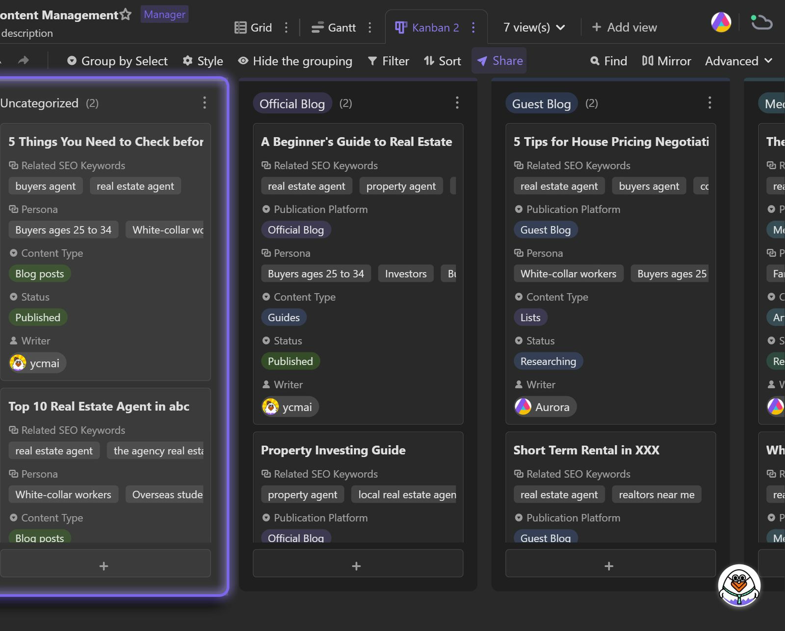
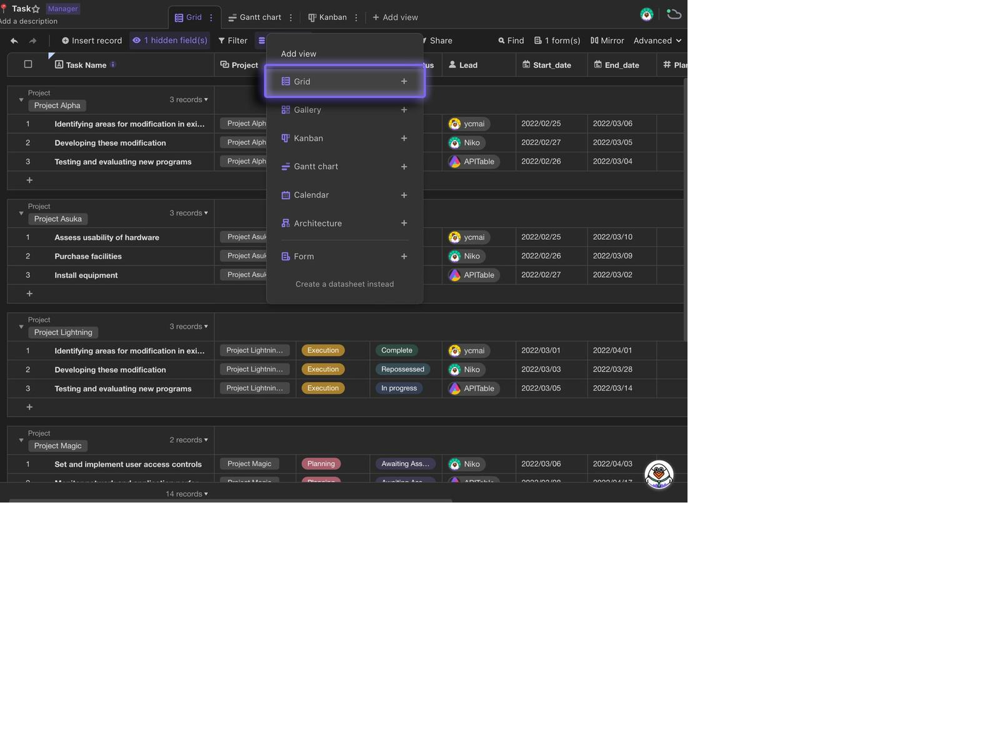

AITable.ai Review: The AI Builds the Spreadsheet. Mostly.
6.0 We Used It Score, out of 10
Ratings by business type
Best suited to: startups and small teams running data and operations workflows, CRM, inventory, content pipelines, who work in boards and tables and will invest the learning time, especially if an AI agent answering from their own data is worth real money to them.
We Used It HQ: Streamlining business, whatever your size
The short answer
AITable is a great concept having an awkward adolescence. Take the Airtable idea, a spreadsheet that is really a database, and build the AI in from the start: agents and chatbots trained on your own tables, AI help constructing the tables themselves. In practice the learning curve is steeper than Airtable's, the polish is a step behind, and the project management basics our reviewer cares about, progress tracking and a serious Gantt, are not as strong. It is also far cheaper than Airtable, and almost nobody is reviewing it, which cuts both ways.
What it is

AITable.ai comes from APITable, founded in 2021, and combines datasheets, forms, dashboards and automations with an AI layer that can answer questions from your data and staff a chatbot on your website. It connects outward through Zapier, Make and similar tools to thousands of apps. Think of it as Airtable's younger, AI obsessed cousin, still growing into its suit.
Where it wins
- The AI agents are the headline, and they are genuinely its own. Where Airtable bolts AI fields onto a database, AITable leads with agents built from your tables: a support bot that answers from your records, assistants that help build the workspace itself. In this series, only Motion's scheduling AI is as central to the product, and it does a completely different job
- Price. Whichever of its recent pricing shapes applies when you read this, it undercuts Airtable materially, and the free tier is usable for a real look
- The database basics are all present: linked records, forms, kanban and gallery views, automations, an API
- A self hosted community edition exists in its ecosystem, which is a rare and honorable escape hatch

Where it frustrates
- The learning curve. Steeper than Airtable's, especially once automations and the AI features enter the picture, and the documentation and community are thinner when you get stuck. Fewer people have asked your question before you
- Polish. The UX/UI feels a generation behind the tools it imitates. Nothing is broken, exactly; everything is slightly more effort than it should be, and the effort compounds
- Project management depth. Like Airtable, work is records, not a task hierarchy, so progress tracking is a field you maintain, not a mechanism. The Gantt side is thin: timeline and kanban views exist, but we found no evidence of dependency or progress depth behind them. For waterfall project work, that is the ball game
- Coverage and consensus are thin. The major review sites barely cover AITable as a project tool, and much of what ranks for it is its own marketing. We are flagging that plainly because it affects how much weight any review, including this one, can carry
The AI, and its price tag
The AI is the product here, so our usual duplication warning flips around: you are not buying a chatbot twice, you are buying a database whose agents are built from your own data. The questions to ask instead are about limits and cost at volume, and about how much training and tidying your tables need before the agents answer like colleagues rather than interns. Packaging and prices checked November 2026; AITable has changed its pricing model recently, so confirm the current shape on its site.
Reporting and dashboards
Dashboards exist over the datasheets and cover the operational basics. They are a step behind Airtable's Interfaces for client presentable output, and cross project reporting is not a story AITable tells. Fine for the team's own numbers; not yet the thing you show a board.
Pricing
Checked November 2026, with a flag: sources conflict because the model has changed. An older per seat listing ran Free up to 10 member seats, then about $8.50, $14.95 and $19.95 per seat up the tiers. A newer workspace listing caps Free and an $18 a month Starter at 2 seats, with a $39 Plus tier and above allowing unlimited seats. Either way the direction is the same: much cheaper than Airtable. Verify the current model before relying on either.
Try it:
Visit AITable.aiVerdict
Could be great, and might be, with another round of design aimed at people who run projects rather than data. Today it is a promising, cheaper, rougher Airtable alternative whose AI agents are a real differentiator and whose project management is not. Waterfall project managers should pass. Data driven small teams with patience should take the free tier for a proper spin.
Try it: Visit AITable.ai
Research note: Pricing sources conflict due to a recent model change, flagged in the text. Product details checked against vendor material and the limited independent coverage available, November 2026. Usage history is the author's own.
Watch: the official video
“Creating an AI QA Chatbot with AITable.ai: Step-by-Step Guide”, from the official AITable.ai YouTube channel.